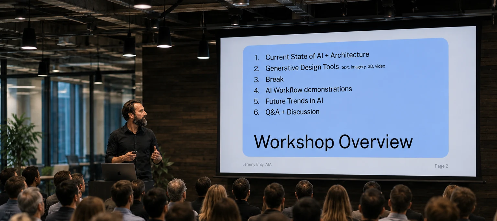
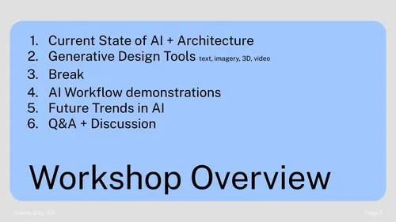
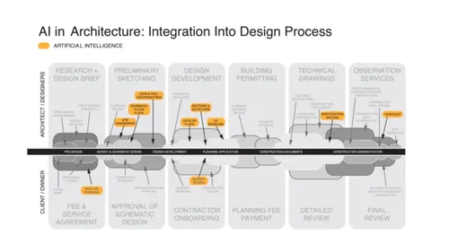
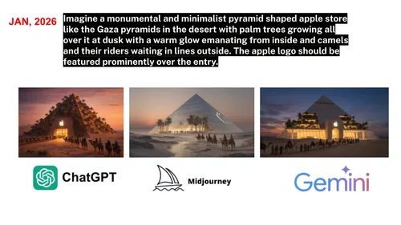
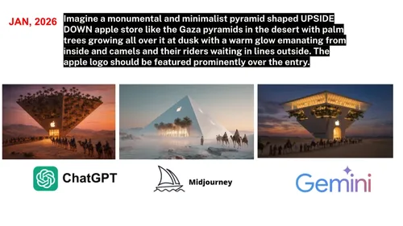
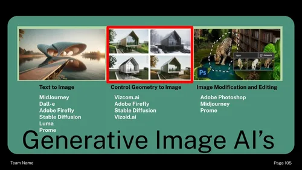

For firms, that means half-day and full-day workshops on practical AI workflows, implementation strategy sessions on where these tools genuinely help and where they still fall short, talks and lectures for firms and institutions, and ongoing consulting conversations with design leaders who want to move with intention rather than hype.
The questions underneath all of it are the same ones I ask in the studio: how can emerging systems expand experimentation without displacing authorship, judgment, ethical responsibility, or the productive difficulty through which designers learn?
I created CU Boulder's first generative AI design course, Generative Design with AI, and serve as an AI Literacy Ambassador for the university. The same questions about taste, bias, labor, environmental cost, and intellectual property that I bring to the classroom are what I bring to your office.





